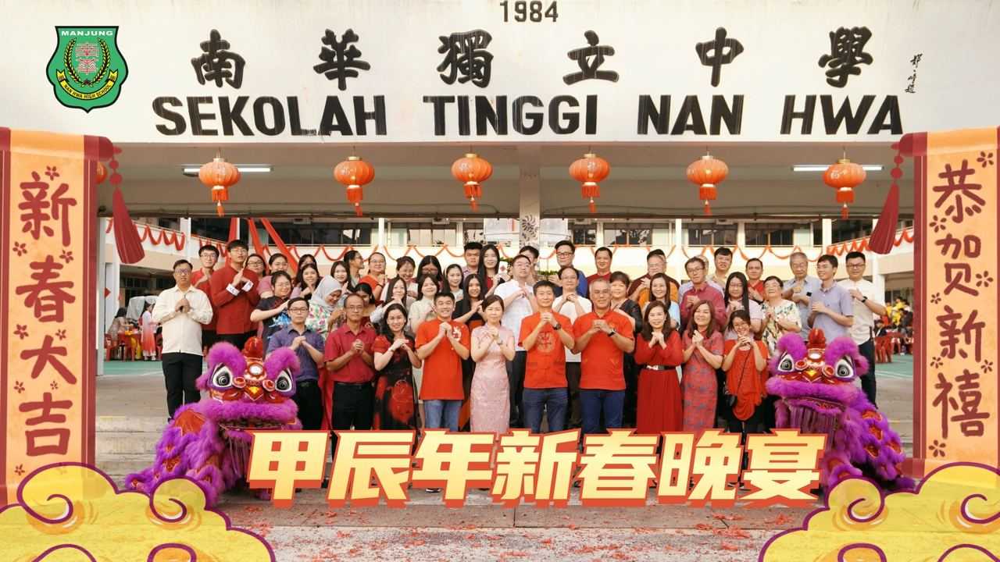
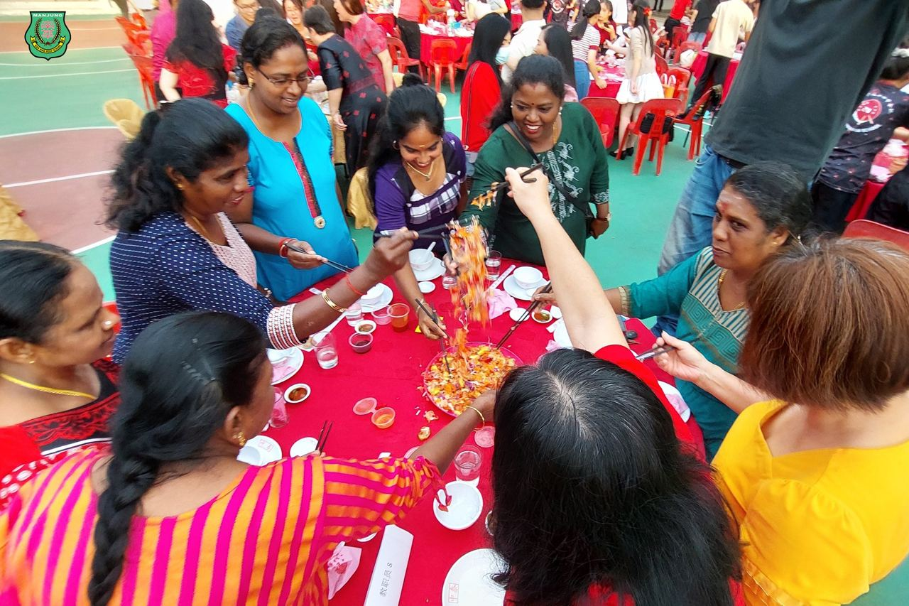
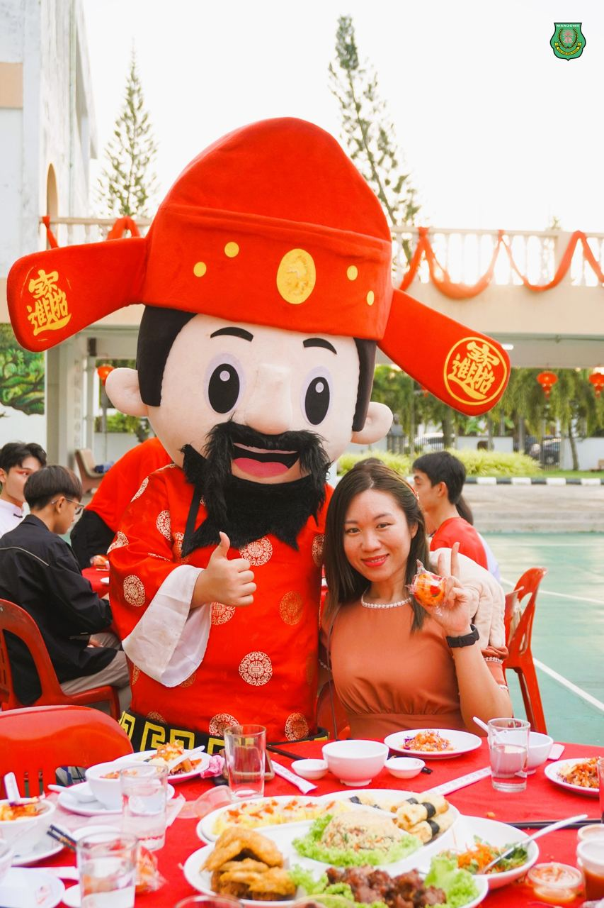
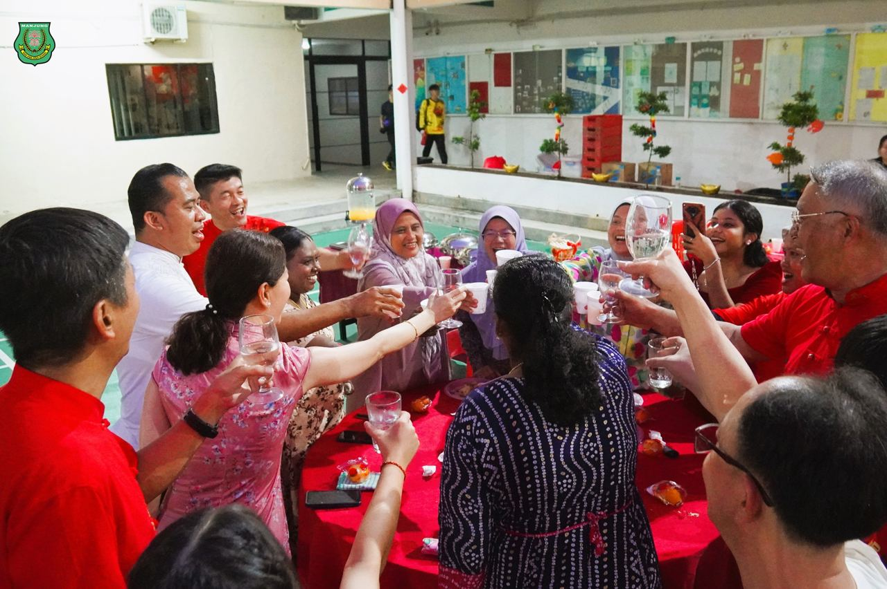
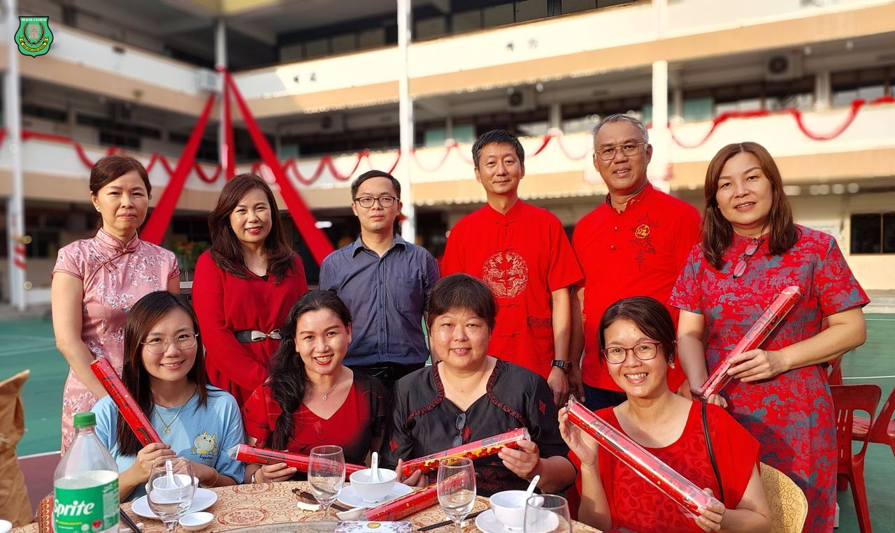
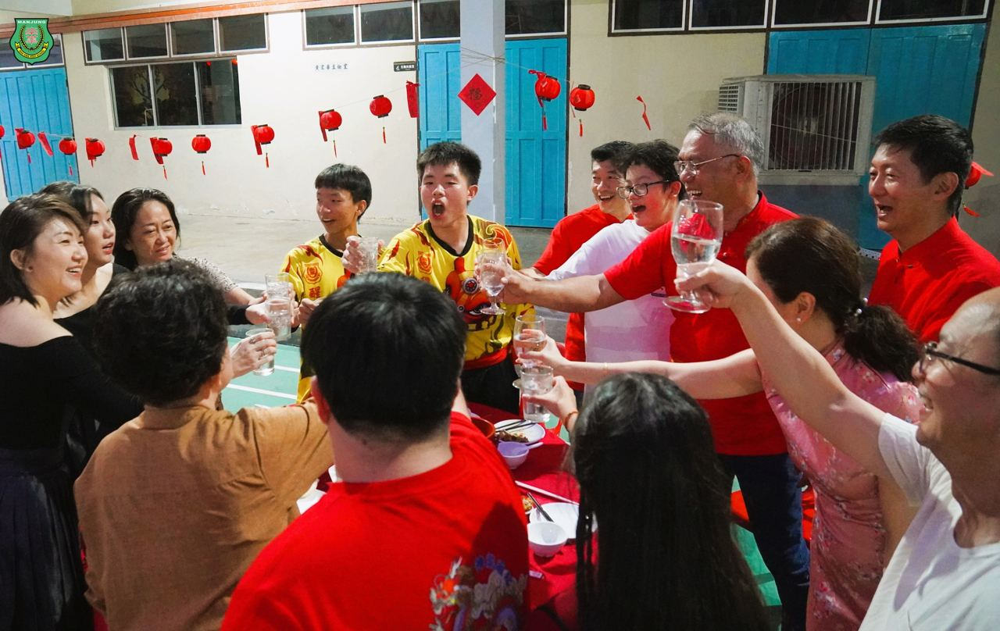
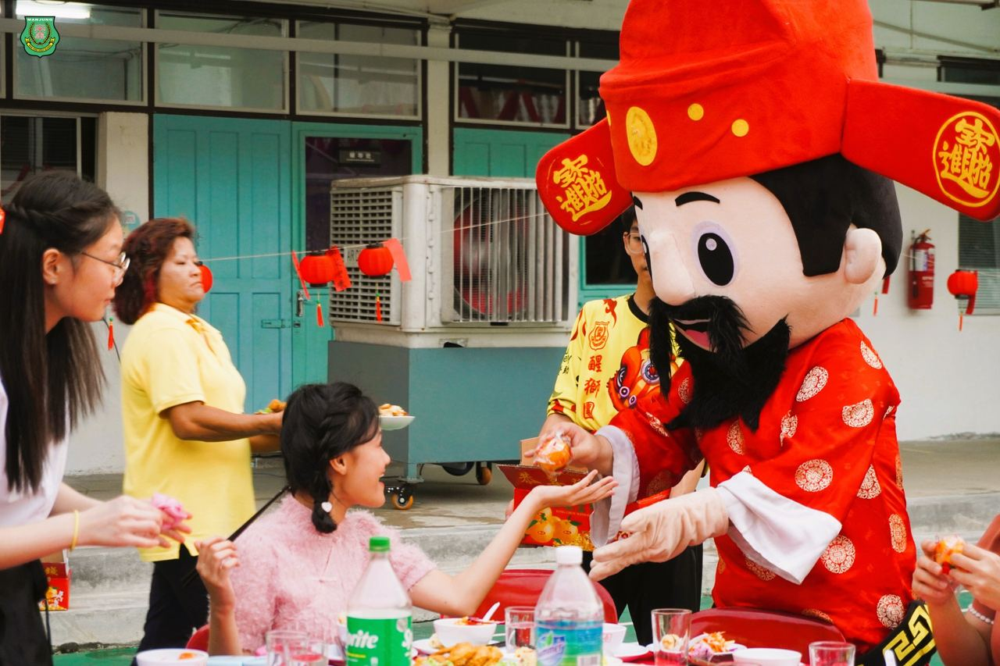
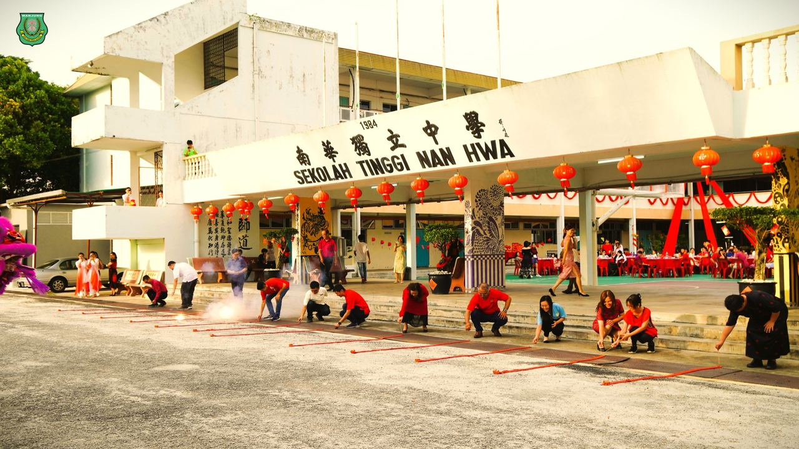

宿舍自治委员会
宿舍自治委员会
办新春晚宴贺甲辰龙年
本校宿舍自治委员会全动员举办2024甲辰龙年新春晚宴，热情邀请南华独中的董家教职员生、宿舍生亲友家长以及贵宾们共贺新春佳节，现场祝贺与欢笑此起彼落，场面温馨热闹非凡。
晚宴现场摆设了流水席宴请宾客，更有来自各学会团体和宿舍新生们精心准备的精彩表演，把欢乐与祝福传递给每一位到场的宾客。这一场盛宴不仅是味蕾的享受，更是心灵的碰撞，为新春佳节增添了一抹喜庆的色彩，让大家在欢笑声中迎接充满希望与祝福的新一年。
董事长颜登逸先生在致辞中表示，此次的新春晚宴体现了宿舍自治委员会筹办活动与组织能力的提升，对宿舍生的表现给予高度的赞赏。另外，颜董事长强调，华教源流学校生存不易，更需要朝着“美美与共，天下大同”的目标互相支援与共享资源，并表示南华独中未来将“美美与共”的精神延续到各个华教命运共同体。最后，颜董事长趁此机会宣布南华独中发放1个月花红予全体老师，并于年中根据老师的绩效考核派发0.75个月的花红。
校长陈丽冰博士表示，新的一年，南华独中迎来了美美与共、天下大同的教育目标，这不仅是学校的追求，更是大家共同的梦想与愿景。陈校长强调，教育也应该开放包容，积极借鉴其他文化的优秀成果，促进文化的多样性和交流互鉴。只有将文化传承与教育实践结合起来，才能培养出具有深厚文化底蕴和国际视野的优秀人才，为社会的发展和进步做出更大的贡献。最后陈校长藉“甲辰年龙行龘龘、前程朤朤、生活䲜䲜、事业燚燚”祝贺全体嘉宾。
家长联谊会主席叶燕妮女士则向董事长、董事们、校长、师长与家长们致以崇高的敬意，在各方合作无间互相扶持下，学校正朝着日臻于善的方向发展。叶女士最后祝愿全体在新的一年里携手并肩，团结一致，共同创造更加美好的未来。
出席2024甲辰龙年新春晚宴的包括有董事长颜登逸先生、董事总务何添胜先生、副总务拿督黄思贤、副总务林道祥先生、家联主席叶燕妮女士、家联理事以及曼绒县华小校长们。
#宿舍自治委员会 #新春晚宴
#南华独中 #曼绒 #实兆远







